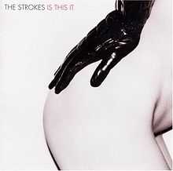
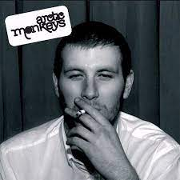
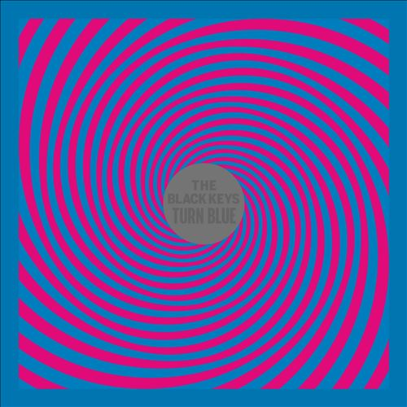
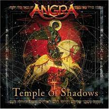
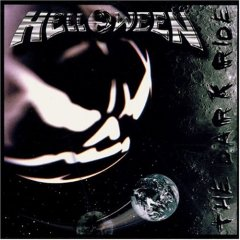

Sobre mim
Sou estudante do curso de Bacharelado em Ciência da Computação na UNIFAL e atuo profissionalmente como desenvolvedor front-end. Atualmente trabalho em um projeto utilizando React com Typescript e Tailwind, mas no passado já atuei em projeto com Angular e Bootstrap, e em outro no back-end, com NodeJS e ExpressJS. Minha ambição e meta de vida é me tornar um Arquiteto de Software, pois, além de gostar de entender tudo o que faço como um todo, gosto muito de praticamente todas as áreas da computação, o que me traz a ambição de tomar decisões nas concepções e desenvolvimento de cada projeto que faço parte.
Passatempos e interesses pessoais
- Música: acredito que meu principal hobby seja a música. Tenho um gosto muito variado, que engloba metal (como Angra e Helloween), rock indie (The Strokes, Arctic Monkeys, The Black Keys…), sertanejo, eletrônica, entre outras. Além de ser um ouvinte assíduo, também toco violão há 13 anos e arrisco nos vocais de vez em quando. Já compus algumas musicas tanto na mão (caneta, caderno e violão) e também através de DAW (estação de trabalho de áudio digital) que é um software feito para criar musicas a partir de sons já gravados e suas edições.
-     
- Jogos: desde criança gosto muito de jogos, como jogos de aventura, RPG, FPS e estratégia. Meus favoritos desde então sempre foram o Counter Strike (FPS), Knight Online (MMORPG), Guitar Hero e Left 4 Dead 2.
- Programação: Embora seja minha profissão atualmente, encaro a programação também como um hobby, pois programar relaxa minha cabeça e me distrai do resto, enquanto exercito minha lógica criando soluções e coisas novas. Atualmente estou programando mais em React, o que está sendo um desafio, pois minha principal experiência foi em Angular. Após muito tempo utilizando a mesma ferramenta, migrar para uma nova é bem difícil, pois o modo de pensar e de trabalhar com ela é diferente.